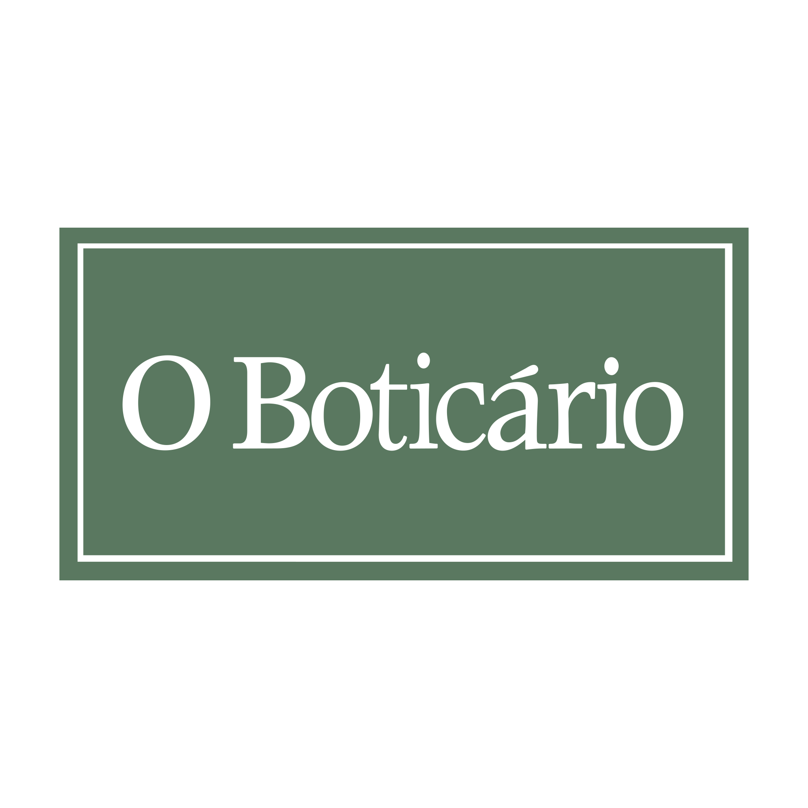

Qualidade e Variedade em Cada Detalhe
Manu Cosméticos oferece uma ampla seleção de produtos das melhores marcas, como Boticário, Natura,
Hinode, Jequiti, Avon e Eudora. Nosso atendimento personalizado garante que você encontre exatamente o
que precisa, sempre com a qualidade e o preço justo que você merece. Explore nossas opções de perfumes,
incluindo Egeo Spicy Vibe, Ilía Deo Parfum, Empire, Eliana Cristal e muito mais, para descobrir o que há
de melhor no mundo dos cosméticos.
Além de perfumes, oferecemos uma vasta gama de produtos para cuidados com a pele, cabelo e corpo. Desde
cremes hidratantes e loções corporais até tratamentos capilares e maquiagens de alta qualidade, Manu
Cosméticos é o seu destino completo para realçar a sua beleza natural. Nossos produtos são
cuidadosamente selecionados para atender às necessidades de todos os tipos de pele e estilos de vida,
proporcionando resultados visíveis e duradouros.
Nosso compromisso é proporcionar uma experiência de compra agradável e satisfatória. Com um atendimento
dedicado e personalizado, estamos prontos para orientar você na escolha dos produtos que melhor
se adaptam ao seu perfil e necessidades. Na Manu Cosméticos, acreditamos que cada cliente merece se
sentir especial, e é por isso que nos empenhamos em oferecer um serviço excepcional, aliado aos melhores
produtos do mercado.
Top 3 marcas
Nossas Marcas Mais Vendidas

A Natura é uma empresa brasileira de cosméticos e produtos de higiene e beleza, reconhecida
por seu compromisso com a sustentabilidade e a responsabilidade social. Fundada em 1969, a
Natura utiliza ingredientes naturais e promove práticas éticas em toda a sua cadeia de
produção. A marca é conhecida por suas linhas de produtos inovadores e de alta qualidade,
que incluem cuidados com a pele, cabelos, perfumes e maquiagem. Além disso, a Natura é uma
das líderes em vendas diretas no Brasil, oferecendo oportunidades de empreendedorismo para
milhares de consultoras e consultores.

O Boticário é uma das maiores redes de franquias de cosméticos do mundo, com uma forte
presença
no Brasil e em diversos outros países. Fundada em 1977, a marca é famosa por suas
fragrâncias
exclusivas e produtos de beleza de alta qualidade. O Boticário se destaca pela inovação
constante e pelo compromisso com a sustentabilidade, utilizando ingredientes naturais e
embalagens recicláveis. A empresa oferece uma ampla gama de produtos, incluindo perfumes,
cuidados com a pele, maquiagem e produtos para o corpo e cabelos, atendendo a diferentes
necessidades e preferências dos consumidores.

A Avon é uma marca global de cosméticos e produtos de beleza, conhecida por seu modelo de
vendas
diretas. Fundada em 1886, a Avon tem uma longa história de empoderamento feminino,
oferecendo
oportunidades de negócios para milhões de revendedoras ao redor do mundo. A marca oferece
uma
vasta gama de produtos, incluindo cuidados com a pele, maquiagem, fragrâncias e cuidados
pessoais. A Avon é reconhecida por suas campanhas de responsabilidade social, como a luta
contra
o câncer de mama e a violência doméstica, além de seu compromisso com a inovação e a
qualidade
dos produtos.